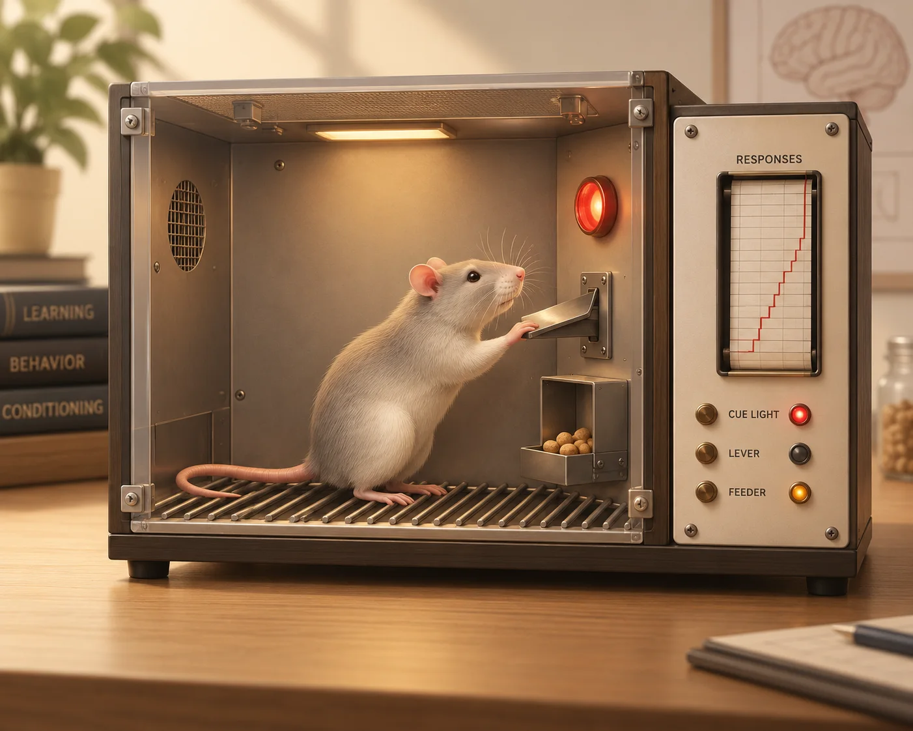
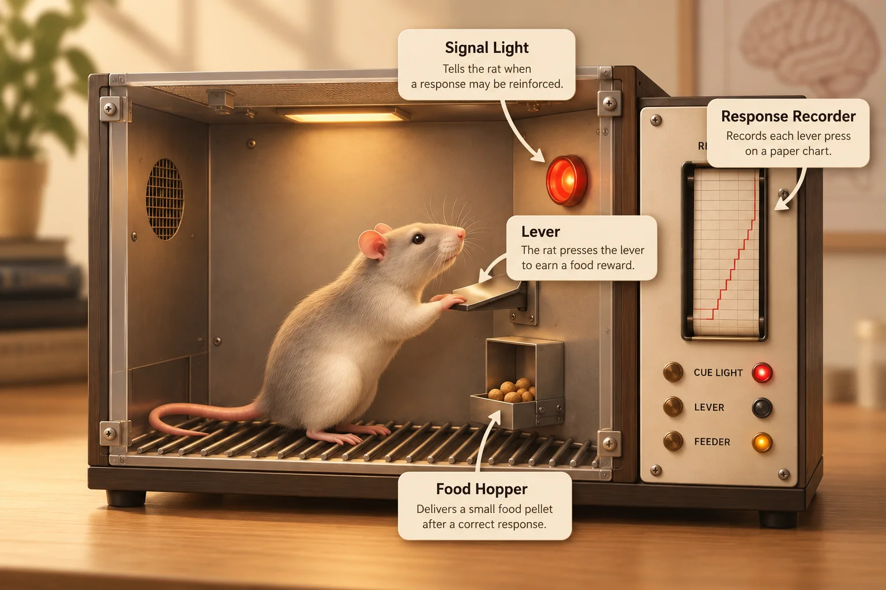
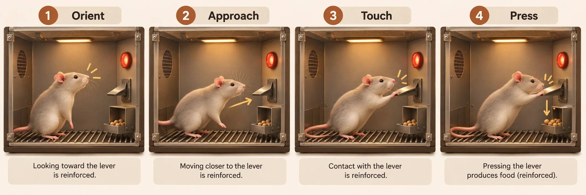
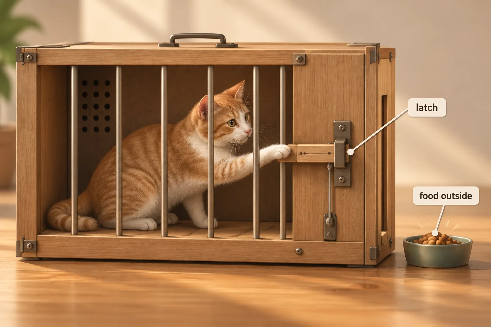
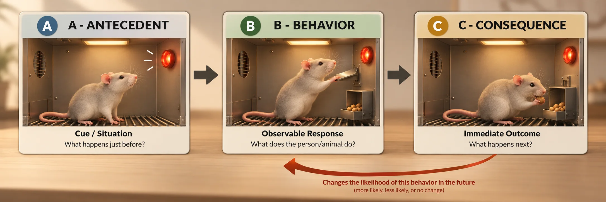
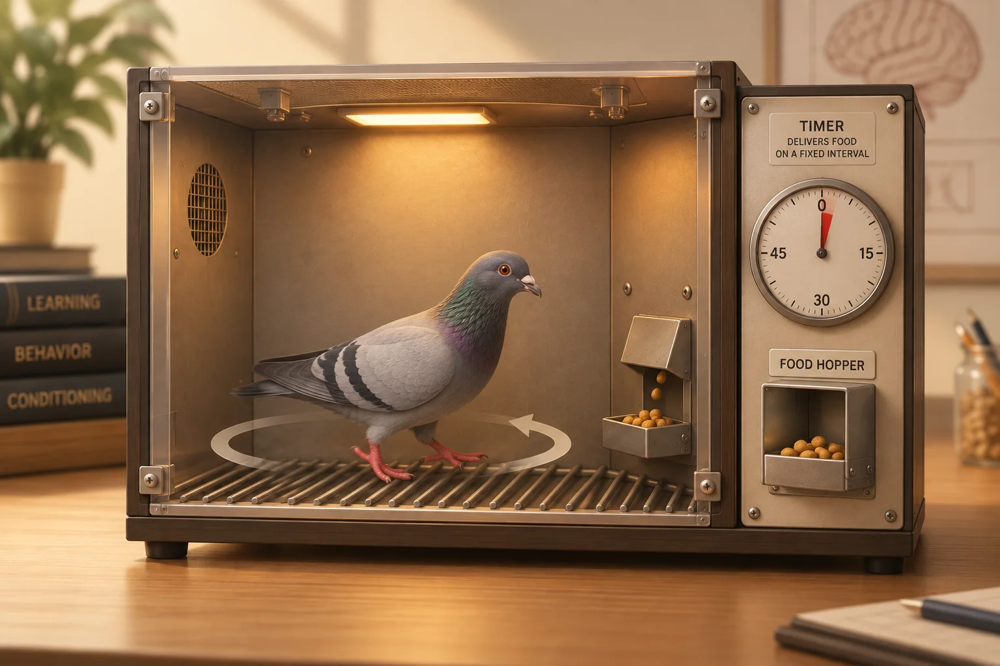
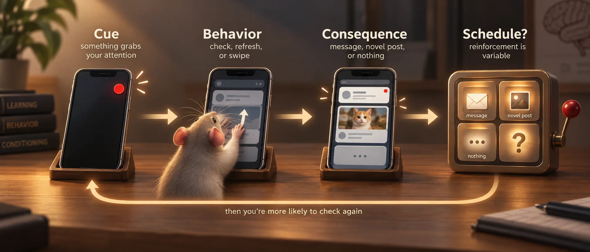
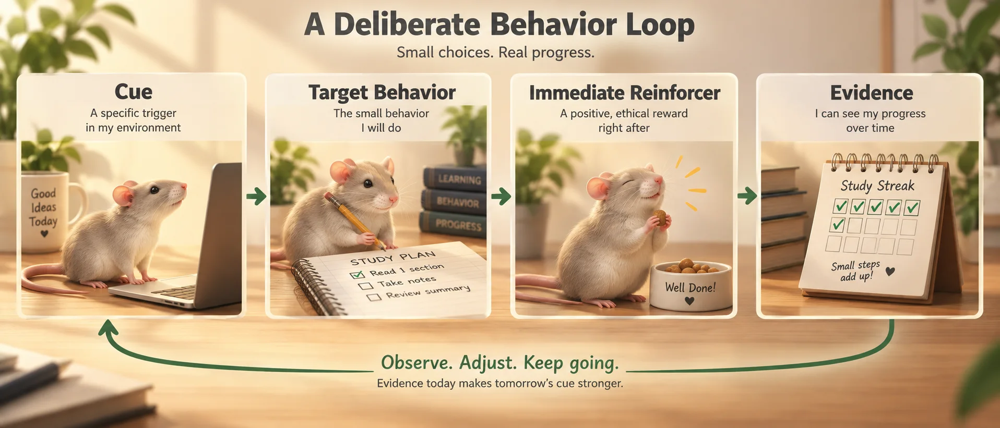

IB Psychology · Operant Conditioning Lab
Nine locks stand between you and the exit. Each one tests the same core idea: behavior has consequences, and those consequences can change what happens next.

Locks open in order. Use the Prev / Next bar at the bottom to move between rooms you've already reached — you can always go back and edit an earlier answer. Quizzes and matching games need a correct answer to open the next door; reflection rooms need real answers (not one-word non-answers) before they'll let you continue.
Everything you type is pulled together automatically at the very end — you don't need to copy anything anywhere as you go.
Get the base definitions solid — the rest of the room assumes you already have these.

Use these if you need a fuller explanation before the checks.
ThinkIB · operant conditioning ↗ APA · reinforcement definition ↗ Simply Psychology · overview ↗A reinforcer is best defined as anything that...
In this topic, "negative" means...
Why did Skinner build the "Skinner box"?
Reinforcing successive approximations toward a target behavior.
Shaping builds a new behavior by reinforcing successive approximations: first a rough step toward the target, then a closer one, and eventually only the target response itself.

If a trainer wanted to shape a dog to close a kitchen drawer with its nose, what might the first three reinforced approximations look like before the final behavior?
Classical or operant? Drag each card into the right column (or tap a card, then tap a column).
| Classical conditioning | Operant conditioning |
|---|---|
| Association between stimuli — one predicts another | Association between behavior and consequence |
| STIMULUS → RESPONSE | BEHAVIOR → CONSEQUENCE → FUTURE PROBABILITY |
Before Skinner's chamber, Thorndike measured how consequences changed escape behavior.

Responses followed by satisfying outcomes became more likely to occur again in that situation. This became the Law of Effect.
APA · puzzle box ↗ APA · Law of Effect ↗Complete Thorndike's Law of Effect. Drag the four words into place.
Thorndike's Law of states that any followed by a consequence will likely be .
Skinner's Operant Conditioning: Rewards & Punishments — Sprouts (~3 min)
Video not loading? Watch it directly on YouTube ↗

1. What makes a consequence a reinforcer?
2. Why is negative reinforcement not punishment?
3. What are the ABCs of behavior?
Crack the code: drag Antecedent, Behavior, and Consequence into the right spots in this real classroom example.
A teacher asks a question in class ; a student answers the question ; the teacher praises the answer .
A → B → C, from real life (classroom, sport, family, anything).
The biggest door in the room. Three checks guard it — clear all three to reach the second half.
POSITIVE ≠ good · NEGATIVE ≠ bad. Drag each example into its quadrant.
A loyalty card gives a free drink after every 10 purchases. Which schedule is the closest match?
Video not loading? Watch it directly on YouTube ↗

Food was presented automatically; at an effective setting Skinner used 15-second intervals. Six of eight pigeons developed distinctive repeated patterns. Skinner interpreted this as accidental reinforcement.
Read Skinner's 1948 paper ↗In Skinner's account, if a pigeon happened to be walking in when the pellet arrived, that movement could be "," even though the food's delivery did not depend on its actions.
An athlete wears a new pair of socks, plays unusually well, and keeps wearing the same pair before important games.
How would Skinner explain the repeated behavior? What would have to happen for the behavior to extinguish?
A student sits in the same seat after getting an unexpectedly high mark and later insists the seat is “lucky.”
Give a Skinnerian explanation, then one alternative explanation such as confirmation bias, selective memory, or social learning.
A consequence only counts as reinforcement or punishment by its effect on that behavior — and behaviorist explanations still have limits.
How confidently can we generalize from rats and pigeons to humans?
What is lost if motivation is explained as only rewards and punishments?
Can one consequence (a grade) reinforce one student but punish another?
Chris is highly disruptive in class. He talks a lot with his friends, often making it difficult for others to focus. Explain how operant conditioning could be used to change Chris's behavior.
The official check. All six correct opens the Final Vault.
1. What does operant conditioning argue?
2. What principle is operant conditioning based on?
3. What is positive punishment?
4. Which of these is an example of negative reinforcement?
5. A reward is delivered after every 10 responses. Which schedule is this?
6. How did Skinner explain the development of superstitions in pigeons?
Your phone is not literally a Skinner box, but many interfaces pair small behaviors with immediate and sometimes unpredictable consequences. That makes operant-conditioning concepts useful for analysis — as long as you define the behavior precisely.
Example: checking for messages that arrive at unpredictable times can resemble a variable-interval schedule; repeatedly refreshing or swiping until an interesting item appears can resemble a variable-ratio pattern. Real apps are more complex than either laboratory schedule.

Watch both clips before Part A. Use them as prompts for analysis, not as proof that a phone is literally a Skinner box.
Video not loading? Open closer video 1 on YouTube ↗
Video not loading? Open closer video 2 on YouTube ↗
Pick one app or feature you actually use. Don't show private messages, photos, contacts, or account details.
Positive/negative reinforcement or punishment? Which schedule, if any?
Now use the same analytic tools in the opposite direction: design a simple, transparent contingency for a behavior you actually want to strengthen, then state what evidence would show whether it worked.

Design a simple, ethical conditioning plan for a behavior you actually want more of.
After one week, what would show the plan worked?
Look back at the top of this page. As you worked through it, a bar filled in, locks flipped from 🔒 to 🔓, and every "Continue" button changed color the moment you passed a check.
Exit question: what did the interface make easier to do, and what evidence would show that it actually changed your behavior?
Enter your details, then download your completed work as a PDF. Your answers from every lock will be included automatically.